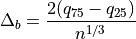
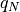
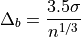

hyperspy.misc.hist_tools module
- hyperspy.misc.hist_tools._freedman_bw_dask(data, return_bins=True)
Dask version of freedman_bin_width
- Parameters
data (dask array) – the data
return_bins (bool (optional)) – if True, then return the bin edges
- Returns
width (float) – optimal bin width using Scott’s rule
bins (ndarray) – bin edges: returned if return_bins is True
Notes
The optimal bin width is

where  is the
 percent quartile of the data, and
percent quartile of the data, and
 is the number of data points.
is the number of data points.
- hyperspy.misc.hist_tools._scott_bw_dask(data, return_bins=True)
Dask version of scotts_bin_width
- Parameters
data (dask array) – the data
return_bins (bool (optional)) – if True, then return the bin edges
- Returns
width (float) – optimal bin width using Scott’s rule
bins (ndarray) – bin edges: returned if return_bins is True
Notes
The optimal bin width is:

where
 is the standard deviation of the data, and
is the number of data points.
is the standard deviation of the data, and
is the number of data points.
- hyperspy.misc.hist_tools.histogram(a, bins='fd', range=None, max_num_bins=250, weights=None, **kwargs)
Enhanced histogram.
This is a histogram function that enables the use of more sophisticated algorithms for determining bins.
- Parameters
a (array_like) – Input data. The histogram is computed over the flattened array.
bins (int or sequence of scalars or str, default "fd") –
If bins is an int, it defines the number of equal-width bins in the given range. If bins is a sequence, it defines the bin edges, including the rightmost edge, allowing for non-uniform bin widths.
If bins is a string from the list below, will use the method chosen to calculate the optimal bin width and consequently the number of bins (see Notes for more detail on the estimators) from the data that falls within the requested range. While the bin width will be optimal for the actual data in the range, the number of bins will be computed to fill the entire range, including the empty portions. For visualisation, using the ‘auto’ option is suggested. Weighted data is not supported for automated bin size selection.
- ’auto’
Maximum of the ‘sturges’ and ‘fd’ estimators. Provides good all around performance.
- ’fd’ (Freedman Diaconis Estimator)
Robust (resilient to outliers) estimator that takes into account data variability and data size.
- ’doane’
An improved version of Sturges’ estimator that works better with non-normal datasets.
- ’scott’
Less robust estimator that that takes into account data variability and data size.
- ’stone’
Estimator based on leave-one-out cross-validation estimate of the integrated squared error. Can be regarded as a generalization of Scott’s rule.
- ’rice’
Estimator does not take variability into account, only data size. Commonly overestimates number of bins required.
- ’sturges’
R’s default method, only accounts for data size. Only optimal for gaussian data and underestimates number of bins for large non-gaussian datasets.
- ’sqrt’
Square root (of data size) estimator, used by Excel and other programs for its speed and simplicity.
- ’knuth’
Knuth’s rule is a fixed-width, Bayesian approach to determining the optimal bin width of a histogram.
- ’blocks’
Determination of optimal adaptive-width histogram bins using the Bayesian Blocks algorithm.
range ((float, float), optional) – The lower and upper range of the bins. If not provided, range is simply
(a.min(), a.max()). Values outside the range are ignored. The first element of the range must be less than or equal to the second. range affects the automatic bin computation as well. While bin width is computed to be optimal based on the actual data within range, the bin count will fill the entire range including portions containing no data.max_num_bins (int, default 250) – When estimating the bins using one of the str methods, the number of bins is capped by this number to avoid a MemoryError being raised by
numpy.histogram().weights (array_like, optional) – An array of weights, of the same shape as a. Each value in a only contributes its associated weight towards the bin count (instead of 1). This is currently not used by any of the bin estimators, but may be in the future.
**kwargs – Passed to
numpy.histogram()
- Returns
hist (array) – The values of the histogram. See normed and weights for a description of the possible semantics.
bin_edges (array of dtype float) – Return the bin edges
(length(hist)+1).
See also
- hyperspy.misc.hist_tools.histogram_dask(a, bins='fd', max_num_bins=250, **kwargs)
Enhanced histogram for dask arrays.
The range keyword is ignored. Reads the data at most two times - once to determine best bins (if required), and second time to actually calculate the histogram.
- Parameters
a (array_like) – array of data to be histogrammed
bins (int or list or str, default 10) –
If bins is a string, then it must be one of:
- ’fd’ (Freedman Diaconis Estimator)
Robust (resilient to outliers) estimator that takes into account data variability and data size.
- ’scott’
Less robust estimator that that takes into account data variability and data size.
max_num_bins (int, default 250) – When estimating the bins using one of the str methods, the number of bins is capped by this number to avoid a MemoryError being raised by
numpy.histogram().**kwargs – Passed to
dask.histogram()
- Returns
hist (array) – The values of the histogram. See normed and weights for a description of the possible semantics.
bin_edges (array of dtype float) – Return the bin edges
(length(hist)+1).
See also
dask.histogram()